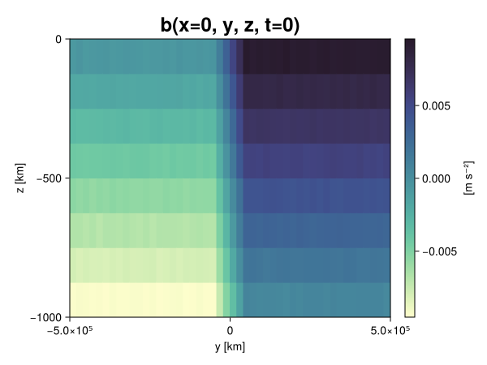
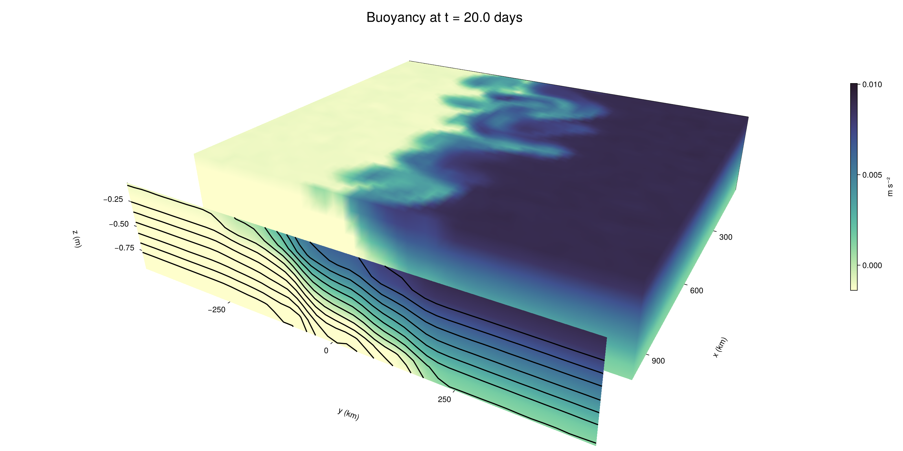

Baroclinic adjustment
In this example, we simulate the evolution and equilibration of a baroclinically unstable front.
Install dependencies
First let's make sure we have all required packages installed.
using Pkg
pkg"add Oceananigans, CairoMakie"using Oceananigans
using Oceananigans.UnitsGrid
We use a three-dimensional channel that is periodic in the x direction:
Lx = 1000kilometers # east-west extent [m]
Ly = 1000kilometers # north-south extent [m]
Lz = 1kilometers # depth [m]
grid = RectilinearGrid(size = (48, 48, 8),
x = (0, Lx),
y = (-Ly/2, Ly/2),
z = (-Lz, 0),
topology = (Periodic, Bounded, Bounded))48×48×8 RectilinearGrid{Float64, Periodic, Bounded, Bounded} on CPU with 3×3×3 halo
├── Periodic x ∈ [0.0, 1.0e6) regularly spaced with Δx=20833.3
├── Bounded y ∈ [-500000.0, 500000.0] regularly spaced with Δy=20833.3
└── Bounded z ∈ [-1000.0, 0.0] regularly spaced with Δz=125.0Model
We built a HydrostaticFreeSurfaceModel with an ImplicitFreeSurface solver. Regarding Coriolis, we use a beta-plane centered at 45° South.
model = HydrostaticFreeSurfaceModel(; grid,
coriolis = BetaPlane(latitude = -45),
buoyancy = BuoyancyTracer(),
tracers = :b,
momentum_advection = WENO(),
tracer_advection = WENO())HydrostaticFreeSurfaceModel{CPU, RectilinearGrid}(time = 0 seconds, iteration = 0)
├── grid: 48×48×8 RectilinearGrid{Float64, Periodic, Bounded, Bounded} on CPU with 3×3×3 halo
├── timestepper: QuasiAdamsBashforth2TimeStepper
├── tracers: b
├── closure: Nothing
├── buoyancy: BuoyancyTracer with ĝ = NegativeZDirection()
├── free surface: ImplicitFreeSurface with gravitational acceleration 9.80665 m s⁻²
│ └── solver: FFTImplicitFreeSurfaceSolver
├── advection scheme:
│ ├── momentum: WENO reconstruction order 5
│ └── b: WENO reconstruction order 5
└── coriolis: BetaPlane{Float64}We start our simulation from rest with a baroclinically unstable buoyancy distribution. We use ramp(y, Δy), defined below, to specify a front with width Δy and horizontal buoyancy gradient M². We impose the front on top of a vertical buoyancy gradient N² and a bit of noise.
"""
ramp(y, Δy)
Linear ramp from 0 to 1 between -Δy/2 and +Δy/2.
For example:
```
y < -Δy/2 => ramp = 0
-Δy/2 < y < -Δy/2 => ramp = y / Δy
y > Δy/2 => ramp = 1
```
"""
ramp(y, Δy) = min(max(0, y/Δy + 1/2), 1)
N² = 1e-5 # [s⁻²] buoyancy frequency / stratification
M² = 1e-7 # [s⁻²] horizontal buoyancy gradient
Δy = 100kilometers # width of the region of the front
Δb = Δy * M² # buoyancy jump associated with the front
ϵb = 1e-2 * Δb # noise amplitude
bᵢ(x, y, z) = N² * z + Δb * ramp(y, Δy) + ϵb * randn()
set!(model, b=bᵢ)Let's visualize the initial buoyancy distribution.
using CairoMakie
# Build coordinates with units of kilometers
x, y, z = 1e-3 .* nodes(grid, (Center(), Center(), Center()))
b = model.tracers.b
fig, ax, hm = heatmap(view(b, 1, :, :),
colormap = :deep,
axis = (xlabel = "y [km]",
ylabel = "z [km]",
title = "b(x=0, y, z, t=0)",
titlesize = 24))
Colorbar(fig[1, 2], hm, label = "[m s⁻²]")
fig
Simulation
Now let's build a Simulation.
simulation = Simulation(model, Δt=20minutes, stop_time=20days)Simulation of HydrostaticFreeSurfaceModel{CPU, RectilinearGrid}(time = 0 seconds, iteration = 0)
├── Next time step: 20 minutes
├── Elapsed wall time: 0 seconds
├── Wall time per iteration: NaN days
├── Stop time: 20 days
├── Stop iteration : Inf
├── Wall time limit: Inf
├── Callbacks: OrderedDict with 4 entries:
│ ├── stop_time_exceeded => Callback of stop_time_exceeded on IterationInterval(1)
│ ├── stop_iteration_exceeded => Callback of stop_iteration_exceeded on IterationInterval(1)
│ ├── wall_time_limit_exceeded => Callback of wall_time_limit_exceeded on IterationInterval(1)
│ └── nan_checker => Callback of NaNChecker for u on IterationInterval(100)
├── Output writers: OrderedDict with no entries
└── Diagnostics: OrderedDict with no entriesWe add a TimeStepWizard callback to adapt the simulation's time-step,
conjure_time_step_wizard!(simulation, IterationInterval(20), cfl=0.2, max_Δt=20minutes)Also, we add a callback to print a message about how the simulation is going,
using Printf
wall_clock = Ref(time_ns())
function print_progress(sim)
u, v, w = model.velocities
progress = 100 * (time(sim) / sim.stop_time)
elapsed = (time_ns() - wall_clock[]) / 1e9
@printf("[%05.2f%%] i: %d, t: %s, wall time: %s, max(u): (%6.3e, %6.3e, %6.3e) m/s, next Δt: %s\n",
progress, iteration(sim), prettytime(sim), prettytime(elapsed),
maximum(abs, u), maximum(abs, v), maximum(abs, w), prettytime(sim.Δt))
wall_clock[] = time_ns()
return nothing
end
add_callback!(simulation, print_progress, IterationInterval(100))Diagnostics/Output
Here, we save the buoyancy, $b$, at the edges of our domain as well as the zonal ($x$) average of buoyancy.
u, v, w = model.velocities
ζ = ∂x(v) - ∂y(u)
B = Average(b, dims=1)
U = Average(u, dims=1)
V = Average(v, dims=1)
filename = "baroclinic_adjustment"
save_fields_interval = 0.5day
slicers = (east = (grid.Nx, :, :),
north = (:, grid.Ny, :),
bottom = (:, :, 1),
top = (:, :, grid.Nz))
for side in keys(slicers)
indices = slicers[side]
simulation.output_writers[side] = JLD2OutputWriter(model, (; b, ζ);
filename = filename * "_$(side)_slice",
schedule = TimeInterval(save_fields_interval),
overwrite_existing = true,
indices)
end
simulation.output_writers[:zonal] = JLD2OutputWriter(model, (; b=B, u=U, v=V);
filename = filename * "_zonal_average",
schedule = TimeInterval(save_fields_interval),
overwrite_existing = true)JLD2OutputWriter scheduled on TimeInterval(12 hours):
├── filepath: ./baroclinic_adjustment_zonal_average.jld2
├── 3 outputs: (b, u, v)
├── array type: Array{Float64}
├── including: [:grid, :coriolis, :buoyancy, :closure]
├── file_splitting: NoFileSplitting
└── file size: 30.7 KiBNow we're ready to run.
@info "Running the simulation..."
run!(simulation)
@info "Simulation completed in " * prettytime(simulation.run_wall_time)[ Info: Running the simulation...
[ Info: Initializing simulation...
[00.00%] i: 0, t: 0 seconds, wall time: 24.434 seconds, max(u): (0.000e+00, 0.000e+00, 0.000e+00) m/s, next Δt: 20 minutes
[ Info: ... simulation initialization complete (26.400 seconds)
[ Info: Executing initial time step...
[ Info: ... initial time step complete (20.534 seconds).
[06.94%] i: 100, t: 1.389 days, wall time: 37.101 seconds, max(u): (1.261e-01, 1.170e-01, 1.616e-03) m/s, next Δt: 20 minutes
[13.89%] i: 200, t: 2.778 days, wall time: 1.123 seconds, max(u): (2.097e-01, 1.707e-01, 1.708e-03) m/s, next Δt: 20 minutes
[20.83%] i: 300, t: 4.167 days, wall time: 1.034 seconds, max(u): (2.993e-01, 2.337e-01, 1.754e-03) m/s, next Δt: 20 minutes
[27.78%] i: 400, t: 5.556 days, wall time: 1.031 seconds, max(u): (3.790e-01, 3.128e-01, 1.763e-03) m/s, next Δt: 20 minutes
[34.72%] i: 500, t: 6.944 days, wall time: 1.141 seconds, max(u): (4.750e-01, 4.489e-01, 1.906e-03) m/s, next Δt: 20 minutes
[41.67%] i: 600, t: 8.333 days, wall time: 1.058 seconds, max(u): (5.952e-01, 6.215e-01, 2.150e-03) m/s, next Δt: 20 minutes
[48.61%] i: 700, t: 9.722 days, wall time: 1.016 seconds, max(u): (8.862e-01, 8.854e-01, 2.621e-03) m/s, next Δt: 20 minutes
[55.56%] i: 800, t: 11.111 days, wall time: 1.119 seconds, max(u): (1.289e+00, 1.052e+00, 3.564e-03) m/s, next Δt: 20 minutes
[62.50%] i: 900, t: 12.500 days, wall time: 1.028 seconds, max(u): (1.377e+00, 1.272e+00, 4.654e-03) m/s, next Δt: 20 minutes
[69.44%] i: 1000, t: 13.889 days, wall time: 1.085 seconds, max(u): (1.369e+00, 1.291e+00, 4.163e-03) m/s, next Δt: 20 minutes
[76.39%] i: 1100, t: 15.278 days, wall time: 1.180 seconds, max(u): (1.471e+00, 1.225e+00, 3.549e-03) m/s, next Δt: 20 minutes
[83.33%] i: 1200, t: 16.667 days, wall time: 1.053 seconds, max(u): (1.340e+00, 1.326e+00, 3.673e-03) m/s, next Δt: 20 minutes
[90.28%] i: 1300, t: 18.056 days, wall time: 1.032 seconds, max(u): (1.550e+00, 1.360e+00, 3.516e-03) m/s, next Δt: 20 minutes
[97.22%] i: 1400, t: 19.444 days, wall time: 1.035 seconds, max(u): (1.577e+00, 1.356e+00, 4.271e-03) m/s, next Δt: 20 minutes
[ Info: Simulation is stopping after running for 1.097 minutes.
[ Info: Simulation time 20 days equals or exceeds stop time 20 days.
[ Info: Simulation completed in 1.098 minutes
Visualization
All that's left is to make a pretty movie. Actually, we make two visualizations here. First, we illustrate how to make a 3D visualization with Makie's Axis3 and Makie.surface. Then we make a movie in 2D. We use CairoMakie in this example, but note that using GLMakie is more convenient on a system with OpenGL, as figures will be displayed on the screen.
using CairoMakieThree-dimensional visualization
We load the saved buoyancy output on the top, north, and east surface as FieldTimeSerieses.
filename = "baroclinic_adjustment"
sides = keys(slicers)
slice_filenames = NamedTuple(side => filename * "_$(side)_slice.jld2" for side in sides)
b_timeserieses = (east = FieldTimeSeries(slice_filenames.east, "b"),
north = FieldTimeSeries(slice_filenames.north, "b"),
top = FieldTimeSeries(slice_filenames.top, "b"))
B_timeseries = FieldTimeSeries(filename * "_zonal_average.jld2", "b")
times = B_timeseries.times
grid = B_timeseries.grid48×48×8 RectilinearGrid{Float64, Periodic, Bounded, Bounded} on CPU with 3×3×3 halo
├── Periodic x ∈ [0.0, 1.0e6) regularly spaced with Δx=20833.3
├── Bounded y ∈ [-500000.0, 500000.0] regularly spaced with Δy=20833.3
└── Bounded z ∈ [-1000.0, 0.0] regularly spaced with Δz=125.0We build the coordinates. We rescale horizontal coordinates to kilometers.
xb, yb, zb = nodes(b_timeserieses.east)
xb = xb ./ 1e3 # convert m -> km
yb = yb ./ 1e3 # convert m -> km
Nx, Ny, Nz = size(grid)
x_xz = repeat(x, 1, Nz)
y_xz_north = y[end] * ones(Nx, Nz)
z_xz = repeat(reshape(z, 1, Nz), Nx, 1)
x_yz_east = x[end] * ones(Ny, Nz)
y_yz = repeat(y, 1, Nz)
z_yz = repeat(reshape(z, 1, Nz), grid.Ny, 1)
x_xy = x
y_xy = y
z_xy_top = z[end] * ones(grid.Nx, grid.Ny)Then we create a 3D axis. We use zonal_slice_displacement to control where the plot of the instantaneous zonal average flow is located.
fig = Figure(size = (1600, 800))
zonal_slice_displacement = 1.2
ax = Axis3(fig[2, 1],
aspect=(1, 1, 1/5),
xlabel = "x (km)",
ylabel = "y (km)",
zlabel = "z (m)",
xlabeloffset = 100,
ylabeloffset = 100,
zlabeloffset = 100,
limits = ((x[1], zonal_slice_displacement * x[end]), (y[1], y[end]), (z[1], z[end])),
elevation = 0.45,
azimuth = 6.8,
xspinesvisible = false,
zgridvisible = false,
protrusions = 40,
perspectiveness = 0.7)Axis3()We use data from the final savepoint for the 3D plot. Note that this plot can easily be animated by using Makie's Observable. To dive into Observables, check out Makie.jl's Documentation.
n = length(times)41Now let's make a 3D plot of the buoyancy and in front of it we'll use the zonally-averaged output to plot the instantaneous zonal-average of the buoyancy.
b_slices = (east = interior(b_timeserieses.east[n], 1, :, :),
north = interior(b_timeserieses.north[n], :, 1, :),
top = interior(b_timeserieses.top[n], :, :, 1))
# Zonally-averaged buoyancy
B = interior(B_timeseries[n], 1, :, :)
clims = 1.1 .* extrema(b_timeserieses.top[n][:])
kwargs = (colorrange=clims, colormap=:deep, shading=NoShading)
surface!(ax, x_yz_east, y_yz, z_yz; color = b_slices.east, kwargs...)
surface!(ax, x_xz, y_xz_north, z_xz; color = b_slices.north, kwargs...)
surface!(ax, x_xy, y_xy, z_xy_top; color = b_slices.top, kwargs...)
sf = surface!(ax, zonal_slice_displacement .* x_yz_east, y_yz, z_yz; color = B, kwargs...)
contour!(ax, y, z, B; transformation = (:yz, zonal_slice_displacement * x[end]),
levels = 15, linewidth = 2, color = :black)
Colorbar(fig[2, 2], sf, label = "m s⁻²", height = Relative(0.4), tellheight=false)
title = "Buoyancy at t = " * string(round(times[n] / day, digits=1)) * " days"
fig[1, 1:2] = Label(fig, title; fontsize = 24, tellwidth = false, padding = (0, 0, -120, 0))
rowgap!(fig.layout, 1, Relative(-0.2))
colgap!(fig.layout, 1, Relative(-0.1))
save("baroclinic_adjustment_3d.png", fig)
Two-dimensional movie
We make a 2D movie that shows buoyancy $b$ and vertical vorticity $ζ$ at the surface, as well as the zonally-averaged zonal and meridional velocities $U$ and $V$ in the $(y, z)$ plane. First we load the FieldTimeSeries and extract the additional coordinates we'll need for plotting
ζ_timeseries = FieldTimeSeries(slice_filenames.top, "ζ")
U_timeseries = FieldTimeSeries(filename * "_zonal_average.jld2", "u")
B_timeseries = FieldTimeSeries(filename * "_zonal_average.jld2", "b")
V_timeseries = FieldTimeSeries(filename * "_zonal_average.jld2", "v")
xζ, yζ, zζ = nodes(ζ_timeseries)
yv = ynodes(V_timeseries)
xζ = xζ ./ 1e3 # convert m -> km
yζ = yζ ./ 1e3 # convert m -> km
yv = yv ./ 1e3 # convert m -> km49-element Vector{Float64}:
-500.0
-479.1666666666667
-458.3333333333333
-437.5
-416.6666666666667
-395.8333333333333
-375.0
-354.1666666666667
-333.3333333333333
-312.5
-291.6666666666667
-270.8333333333333
-250.0
-229.16666666666666
-208.33333333333334
-187.5
-166.66666666666666
-145.83333333333334
-125.0
-104.16666666666667
-83.33333333333333
-62.5
-41.666666666666664
-20.833333333333332
0.0
20.833333333333332
41.666666666666664
62.5
83.33333333333333
104.16666666666667
125.0
145.83333333333334
166.66666666666666
187.5
208.33333333333334
229.16666666666666
250.0
270.8333333333333
291.6666666666667
312.5
333.3333333333333
354.1666666666667
375.0
395.8333333333333
416.6666666666667
437.5
458.3333333333333
479.1666666666667
500.0Next, we set up a plot with 4 panels. The top panels are large and square, while the bottom panels get a reduced aspect ratio through rowsize!.
set_theme!(Theme(fontsize=24))
fig = Figure(size=(1800, 1000))
axb = Axis(fig[1, 2], xlabel="x (km)", ylabel="y (km)", aspect=1)
axζ = Axis(fig[1, 3], xlabel="x (km)", ylabel="y (km)", aspect=1, yaxisposition=:right)
axu = Axis(fig[2, 2], xlabel="y (km)", ylabel="z (m)")
axv = Axis(fig[2, 3], xlabel="y (km)", ylabel="z (m)", yaxisposition=:right)
rowsize!(fig.layout, 2, Relative(0.3))To prepare a plot for animation, we index the timeseries with an Observable,
n = Observable(1)
b_top = @lift interior(b_timeserieses.top[$n], :, :, 1)
ζ_top = @lift interior(ζ_timeseries[$n], :, :, 1)
U = @lift interior(U_timeseries[$n], 1, :, :)
V = @lift interior(V_timeseries[$n], 1, :, :)
B = @lift interior(B_timeseries[$n], 1, :, :)Observable([-0.009397230919149778 -0.008131027114157906 -0.0068729639118160915 -0.005615532824938245 -0.004341517369006652 -0.0031323651784585372 -0.0018553795739135986 -0.0006236826230628153; -0.009381145711840419 -0.008154875453921176 -0.0068704382427230695 -0.005639705754540346 -0.004371382044613924 -0.0031241616678467127 -0.0018815340692758503 -0.0006259949894787084; -0.009388210083462425 -0.008143598792627986 -0.006883575295272515 -0.005622683192291668 -0.004356178579429193 -0.003120255415025928 -0.0018690943814608646 -0.0006413797921375678; -0.0093754899590735 -0.008120353987261 -0.0068578949345484115 -0.005648120523170579 -0.004384731146062151 -0.003113744692996353 -0.0018846852328953635 -0.0006279357764546943; -0.009362246673110008 -0.008129088584024044 -0.0068972772102247485 -0.0056448158428355185 -0.004385326106308614 -0.0031421468594549505 -0.0018776224786480236 -0.0006341774562745753; -0.009392413989472855 -0.008119820151874504 -0.006877333404157397 -0.005642272313413385 -0.00436664179434442 -0.003119264668918632 -0.0018666625470003778 -0.0005984362744897745; -0.009394573370804446 -0.008128600095045374 -0.006870571503825702 -0.005654683968211821 -0.004375958431597886 -0.0031472680428843713 -0.0018543754947615953 -0.0006464848635611308; -0.00939465908629024 -0.008099538062691975 -0.006861748716171721 -0.005589625927065984 -0.004385299580319181 -0.003098196543496796 -0.0018680503920397327 -0.0006098344573403077; -0.009360281658889918 -0.00811708947542062 -0.00688317676353864 -0.005629525837393758 -0.004369081501505895 -0.0031265048840540765 -0.0018787858185803279 -0.0006063830489814893; -0.009366702881672776 -0.008134465677920663 -0.006847784207837081 -0.005630558578995062 -0.0043768028236425595 -0.0031191211883202247 -0.0018708359901526232 -0.0006353133979385654; -0.009372272681514143 -0.008122229264451448 -0.0068513772353230445 -0.005632638174307797 -0.0043958776137730015 -0.0031115921920167994 -0.0018546134076316218 -0.0006143759826314571; -0.00938945439901574 -0.008118284041150836 -0.006852067632163099 -0.005617683358171771 -0.004343524920727694 -0.0031382645246158768 -0.0018503910954252134 -0.0006314893585540405; -0.00936567104574157 -0.008114176181777332 -0.006889841078612399 -0.005637271118205081 -0.0043726008173082115 -0.003167521060162444 -0.0018821573022267618 -0.0006464830767873522; -0.009357472060444084 -0.00811973870574456 -0.006845166121277516 -0.005607983480614247 -0.0043641670340111086 -0.0031207381545838284 -0.001863438753380518 -0.0006205216620629619; -0.009368406833316413 -0.008157449926019196 -0.006891429079813861 -0.0056140502999937935 -0.004399472739053392 -0.0031430115811561603 -0.0018632146292226653 -0.0006331601441677712; -0.00937721764675554 -0.008132851168068467 -0.006877433746107269 -0.00562476385473587 -0.004343773346712851 -0.0031383016333872333 -0.0018866645997212249 -0.0006358835151975619; -0.0093883421341303 -0.00812023790450244 -0.006887598090347707 -0.00562981419599061 -0.004381798165922982 -0.0031460304467774767 -0.0018826624068366932 -0.0006154166361315304; -0.009388290658246576 -0.008129757653359116 -0.006878602988755068 -0.005586321092782824 -0.0043839973466044185 -0.003143617498667926 -0.001867307865190252 -0.0006325925194309966; -0.009387049930462377 -0.008122840857873367 -0.006877469706075708 -0.0056219883219564976 -0.004391065881365814 -0.0031633677727215064 -0.001875263623286768 -0.0006401391036684988; -0.009375500601522023 -0.008139982989322786 -0.006877885738649871 -0.00563985096792707 -0.004374039365775122 -0.0031089332855006803 -0.0018736412747071011 -0.0006254309618005288; -0.009386772335473977 -0.008116135381368069 -0.006878132235572212 -0.005612504743710614 -0.004401655179916004 -0.0031209222505813226 -0.0018708085952045652 -0.0005938154290401287; -0.009371453775468426 -0.008125844762203424 -0.006853024310014125 -0.005624864113136378 -0.00439586567647784 -0.003121679258909986 -0.0018599163764949102 -0.0006096136081340857; -0.007488890819580475 -0.006243632883272246 -0.005010403919680059 -0.003774993796753344 -0.002500034380881208 -0.001230974834147504 1.698871069055326e-5 0.0012464198926284912; -0.005431948771194468 -0.004152324181461783 -0.002899194460618525 -0.0016487983551162003 -0.00043265962476830865 0.0008426640906042359 0.002080723767467861 0.0033270099287135194; -0.0033182804976729535 -0.0020628816784797315 -0.0008157977759362493 0.0004103253017765805 0.0016772593377303278 0.002931946203084977 0.0041460097900277056 0.005426062578958994; -0.0012882930851432328 -2.7378091473359948e-6 0.0012611851767833976 0.0024946503086874 0.0037500655731101426 0.005008746744297834 0.006240060739669001 0.0075027742712808106; 0.0006382170897361532 0.0018876628701385717 0.0031509509488206965 0.004372871306489732 0.0056314466613164756 0.00685712188330579 0.008128394862538706 0.009385809011718678; 0.0006507617586646619 0.0018855252675454362 0.0031230260272234155 0.004393073356796352 0.005592287617030449 0.006888397721215874 0.008159938215431019 0.009385147515754042; 0.0006124568725393334 0.0018805022453244856 0.003127341992203368 0.004354362664635688 0.005596569356493226 0.006881407789452482 0.008129005694598901 0.009391003556775244; 0.0006224466620349834 0.0018746221825552457 0.0031363752952169714 0.0043653008942817284 0.005645516955854367 0.006866968973132993 0.008141091281064862 0.009364932509324332; 0.0006560900733740896 0.0018831045664463855 0.003107460134112427 0.004380687126707825 0.0055988055437785475 0.006870136859165608 0.008123385774148848 0.009361918253019807; 0.0006386698962314001 0.001858756376781911 0.0031291543679696832 0.004371461394434594 0.005636002060795075 0.006890788546080935 0.008120307821811975 0.009383807792524405; 0.0006328645794597662 0.0018824762725681537 0.0031165162282477204 0.00435122283712133 0.005598491464354742 0.0068580824770454706 0.008108907151901113 0.009400751580303726; 0.0006151875814949481 0.00189525968926972 0.0031418787630455853 0.004373704510458409 0.005638946158139607 0.006874821176043533 0.008133831151836123 0.00937409238563135; 0.0006151222723671285 0.0018874656880105145 0.0031446602164397143 0.004355588782272476 0.005602095682340865 0.006895140099783095 0.008126218730110608 0.009397633753328851; 0.0006305410426408185 0.0018549918604984252 0.00313940362992354 0.004349982150251405 0.00563510538748829 0.006884490297519116 0.008116031681539982 0.009372683027863931; 0.0006276316298540943 0.001874660150883468 0.003130137108002182 0.004362039957597919 0.005637312495786996 0.006864468012459438 0.008134853921193785 0.009382910706369265; 0.0006234779759386127 0.0018858691480759997 0.0031155175364596475 0.00435333313577639 0.0056580873478479276 0.00687000660623602 0.008104008980795531 0.009394276488325994; 0.0006412378191295061 0.0018894643488619363 0.0031403415789475557 0.004366413949011566 0.005607741703253409 0.006874131856774504 0.00812261100618202 0.009362490524623039; 0.0006267161544840349 0.0018728012386772781 0.003131206059681203 0.0043614949300546865 0.0056254796153634755 0.006880444579986197 0.008133929367721837 0.00937639469889872; 0.0006199659251658507 0.0018600280176425208 0.0031223116007790936 0.00436824040853558 0.005652241623077195 0.006853048612598618 0.008123727015940036 0.009374365979867044; 0.0006463653097477045 0.0018850482917627412 0.0031357477899397698 0.004381164267119341 0.005621583049395386 0.006847479619627406 0.008125251008041156 0.009379602885092994; 0.000652599910783906 0.0018881606320722902 0.00311725996662047 0.004378172969814401 0.005639759892622381 0.006861631671614417 0.008140790133072602 0.009370295768032617; 0.000619005924864349 0.0018559431700892384 0.003137807678680093 0.004376676122272486 0.005620201781054729 0.0068944791078047385 0.00810003855313599 0.00937272474872036; 0.0006067401704176888 0.001874249013250684 0.0031343048440091986 0.004374207105540842 0.005627931424314635 0.006884191803183805 0.008116944266975915 0.009401248622857161; 0.0006459268117527872 0.001868902863391696 0.0031159915374492086 0.004367940037848098 0.00563724177626641 0.006882223161894368 0.008139190299730807 0.009375451291002224; 0.0006306901918916438 0.0019042884703889887 0.003121309315229082 0.004360259878903143 0.0056175219150426435 0.0068854834450352105 0.008118661240460937 0.009357506394966157; 0.0005951562012609065 0.0018836124136869786 0.0030884166399496663 0.004369303914977266 0.005610957429712223 0.006889453362757821 0.008129900004038973 0.009371259119313963])
and then build our plot:
hm = heatmap!(axb, xb, yb, b_top, colorrange=(0, Δb), colormap=:thermal)
Colorbar(fig[1, 1], hm, flipaxis=false, label="Surface b(x, y) (m s⁻²)")
hm = heatmap!(axζ, xζ, yζ, ζ_top, colorrange=(-5e-5, 5e-5), colormap=:balance)
Colorbar(fig[1, 4], hm, label="Surface ζ(x, y) (s⁻¹)")
hm = heatmap!(axu, yb, zb, U; colorrange=(-5e-1, 5e-1), colormap=:balance)
Colorbar(fig[2, 1], hm, flipaxis=false, label="Zonally-averaged U(y, z) (m s⁻¹)")
contour!(axu, yb, zb, B; levels=15, color=:black)
hm = heatmap!(axv, yv, zb, V; colorrange=(-1e-1, 1e-1), colormap=:balance)
Colorbar(fig[2, 4], hm, label="Zonally-averaged V(y, z) (m s⁻¹)")
contour!(axv, yb, zb, B; levels=15, color=:black)Finally, we're ready to record the movie.
frames = 1:length(times)
record(fig, filename * ".mp4", frames, framerate=8) do i
n[] = i
endThis page was generated using Literate.jl.